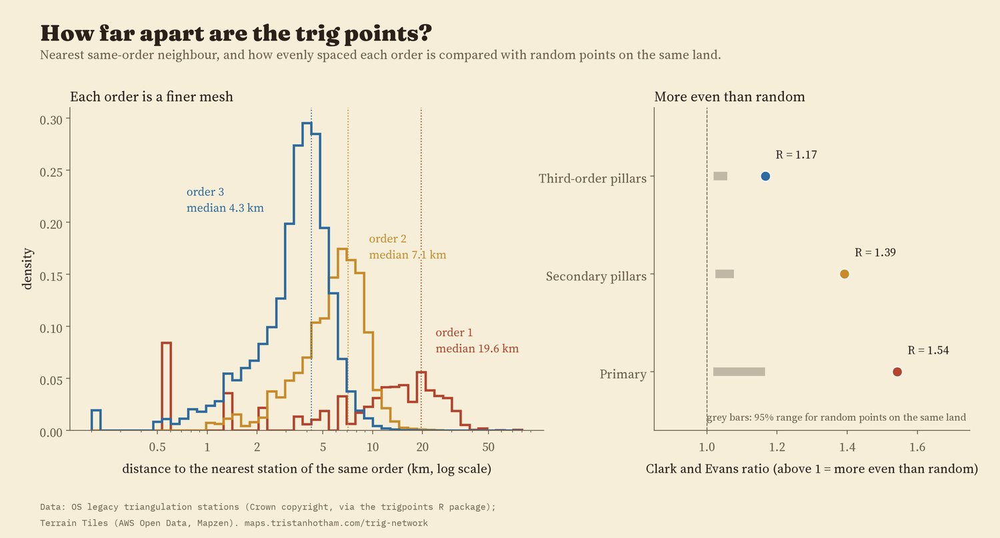
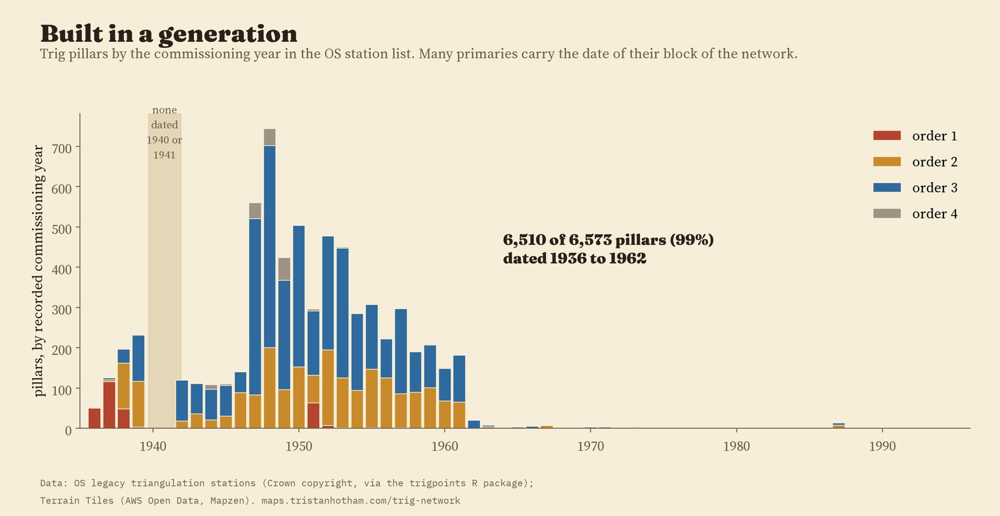
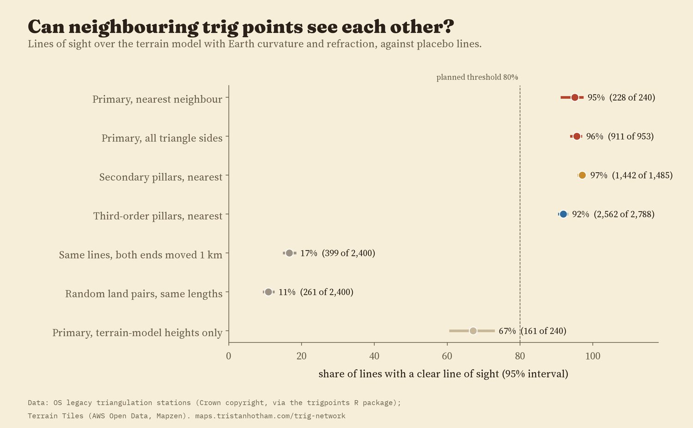
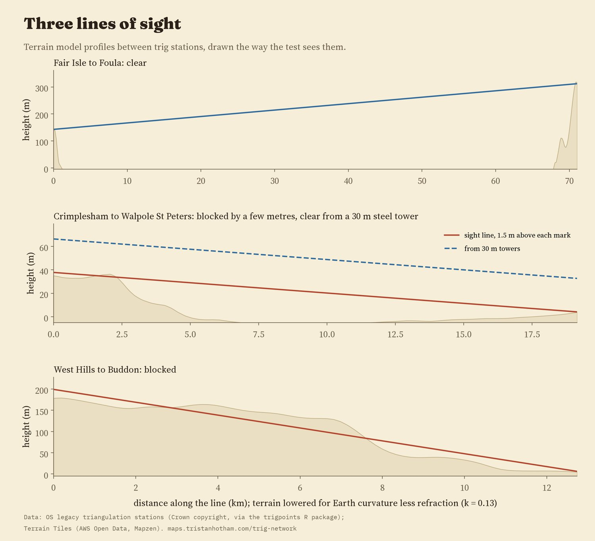
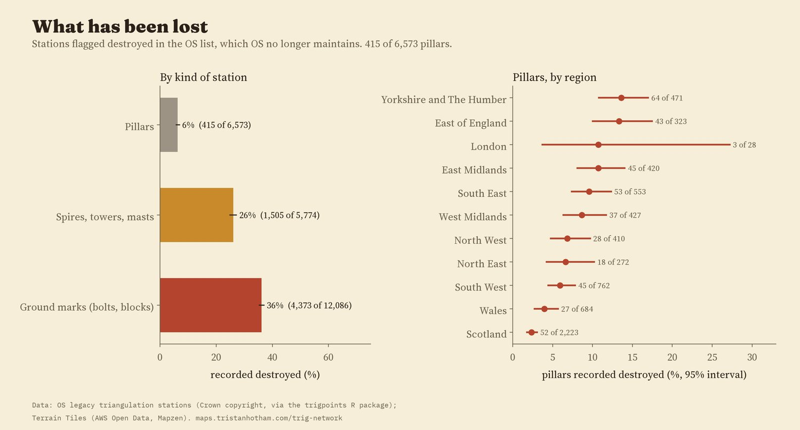

Every station in the Ordnance Survey's list for Great Britain, 24,433 in all, coloured by order. Lines join each primary station, and each secondary and third-order pillar, to its nearest neighbour of the same order: blue where the terrain model says they can see each other, red where it says they cannot. Drag the timeline; tap a dot or a line.
On hilltops all over Britain stand squat concrete pillars about four feet (1.2 m) high, each with a brass mounting on top. They were the Ordnance Survey's survey stations for the Retriangulation of Great Britain, whose first pillar went up in 1936 and which gave Britain its National Grid. The OS list of its old triangulation stations holds 24,433 stations in Great Britain, 6,573 of them pillars. I mapped every one and asked four questions: how the network was laid out, when it was built, how much has been lost, and whether a modern open terrain model can still see the rule the surveyors worked to, that a station must be in sight of its neighbours.
The network was built in orders. 347 primary stations carry the big triangles; secondary and third-order stations fill them in, and fourth-order marks (often bolts on buildings, church spires and flagstaffs) fill in the towns. The median distance from a primary station to its nearest primary neighbour is 19.6 km (95% interval 18.5 to 20.6). For secondary pillars it is 7.1 km, and for third-order pillars 4.3 km.
The stations are also far more evenly spaced than chance. A Clark and Evans ratio measures this: 1 for random points, higher for more even spacing. The primaries score 1.54, while random points scattered on the same land score 1.02 to 1.17. Joining neighbouring primaries into triangles, 71% of the 582 triangles have every angle at least 30 degrees, the kind of well-shaped triangle surveyors aim for, against 48% for random points.

Nearest same-order neighbour by order, and evenness compared with random points on the same land.
The first pillar was used in 1936. Of the 6,573 pillars, 6,510 (99%) carry a commissioning date between 1936 and 1962, the years of the Retriangulation. The busiest year in the list is 1948, with 744 pillars. Work stopped for the war: no station in the list is dated 1940 or 1941. Many primary stations carry the date of their whole block of the network rather than their own, so single years should be read loosely.

Pillars by commissioning year in the OS station list, coloured by order.
Triangulation needs every station to see its neighbours. So I drew a line from each primary station to its nearest primary neighbour and checked it over a modern open terrain model, Terrain Tiles at zoom 9 (pixels about 190 m across), with the Earth's curvature and the usual allowance for light bending in the air. The ends sit at the surveyed height of the station plus 1.5 m for the instrument. I wrote down the test, and what would count against it, before running it.
Of 240 nearest-neighbour primary lines, 228 (95.0%, 95% interval 91.5 to 97.1%) are clear. Every side of the primary triangle net up to 80 km: 95.6%. Secondary pillars: 97.1%; third-order pillars: 91.9%. For comparison, the same lines with both ends moved 1 km in a random direction are clear only 17% of the time, and random pairs of points on land at the same distances 11% of the time. That fits stations sited for what they could see.

Share of lines with a clear line of sight, with 95% intervals.
The 12 primary lines that fail are telling. 8 involve a cathedral, an observatory, a lighthouse, a water tower or a castle whose height is not recorded in the list, so the test puts the observer on the ground rather than up the tower. 3 are pillar to pillar in flat country in Norfolk, Suffolk and Lincolnshire, blocked by a few metres. Every one of those 3 has an end at a station where the surveyors put up a steel observing tower (often about 30 m tall), and with a 30 m tower added, 3 of 3 clear.

Three lines as the test sees them. The terrain is lowered for the curvature of the Earth less refraction.
The result does not hang on the details: with no refraction allowance, with more, with a finer profile, with the two nearest neighbours instead of one, or leaving out one region at a time, the share stays between 93.2% and 96.6%. With no instrument height at all it is 90%; from a 5 m signal, 98%. One choice matters a lot. The zoom 9 terrain rounds off summits: at pillars it sits a median 22 m below the surveyed height. Using the terrain model's own heights at the ends, only 67% of primary lines are clear, though that is still far above the placebo lines. So the 95% figure rests on the surveyed heights. The last failure, West Hills to Buddon near Dundee, a ground mark with no recorded height behind rising ground, I cannot explain.
The OS list flags stations known to be destroyed. 6.3% of pillars are flagged, against 26% of spires, towers, masts and other intersected stations, and 36% of ground marks such as bolts and buried blocks. In a model that also allows for order, region, decade and whether the station is in the lowlands, intersected stations had 3.3 times the odds of being flagged destroyed (95% interval 2.8 to 3.8) and ground marks 5.5 times; stations below 100 m had 1.47 times the odds of upland ones. By region, Scotland's pillars are the least often flagged (2.3%).

Share flagged destroyed, by kind of station and, for pillars, by region.
OS no longer maintains the list, so "not destroyed" means only "not known to be destroyed". As a rough check, 29% of the surviving pillars have a survey point mapped in OpenStreetMap within 50 m, against 2.9% of the destroyed ones.
Stations. The OS legacy list, as packaged in the trigpoints R package, has 31,521 rows. A station can have several rows (a pillar, a bolt beneath it, a refixed mark), so I grouped rows with the same station code within 100 m into 24,433 stations, and called a station a pillar if any of its rows is one.
Lines of sight. For each line I sampled the terrain every 100 m, lowered it for the curvature of the Earth less refraction (coefficient 0.13), ignored the first and last 250 m, and called the line clear if no sample rose above it. The placebos use the same terrain and the ground height plus 1.5 m at each end.
What this cannot say. The terrain model has no trees or buildings and rounds off hilltops; the OS list does not record which lines were actually observed, so nearest neighbours stand in for them; and the destroyed flag is out of date. The St Kilda stations lie just outside the terrain tiles, so the one line to St Kilda is treated as open sea, which it mostly is.